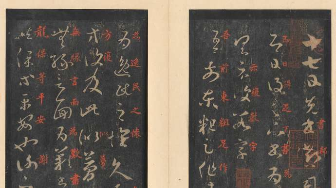
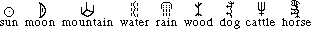
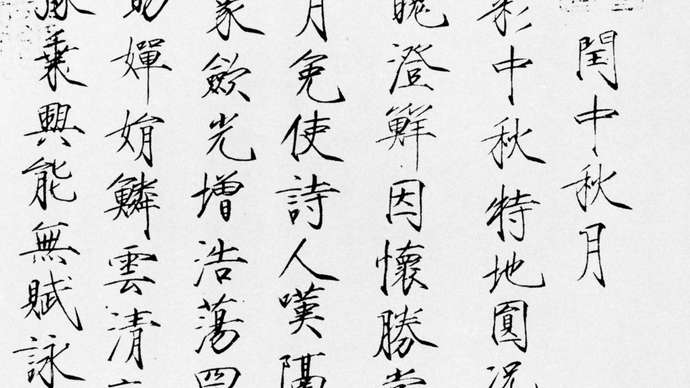

Chinese calligraphy, the stylized artistic writing of Chinese characters, the written form of Chinese that unites the languages (many mutually unintelligible) spoken in China. Because calligraphy is considered supreme among the visual arts in China, it sets the standard by which Chinese painting is judged. Indeed, the two arts are closely related.

The early Chinese written words were simplified pictorial images, indicating meaning through suggestion or imagination. These simple images were flexible in composition, capable of developing with changing conditions by means of slight variations.
The earliest known Chinese logographs are engraved on the shoulder bones of large animals and on tortoise shells. For this reason the script found on these objects is commonly called jiaguwen, or shell-and-bone script. It seems likely that each of the ideographs was carefully composed before it was engraved. Although the figures are not entirely uniform in size, they do not vary greatly in size. They must have evolved from rough and careless scratches in the still more distant past. Since the literal content of most jiaguwen is related to ancient religious, mythical prognostication or to rituals, jiaguwen is also known as oracle bone script. Archaeologists and paleographers have demonstrated that this early script was widely used in the Shang dynasty (c. 1600–1046 BCE). Nevertheless, the 1992 discovery of a similar inscription on a potsherd at Dinggongcun in Shandong province demonstrates that the use of a mature script can be dated to the late Neolithic Longshan culture (c. 2600–2000 BCE).
It was said that Cangjie, the legendary inventor of Chinese writing, got his ideas from observing animals’ footprints and birds’ claw marks on the sand as well as other natural phenomena. He then started to work out simple images from what he conceived as representing different objects such as those that are given below:

Surely, the first images that the inventor drew of these few objects could not have been quite so stylized but must have undergone some modifications to reach the above stage. Each image is composed of a minimum number of lines and yet is easily recognizable. Nouns no doubt came first. Later, new ideographs had to be invented to record actions, feelings, and differences in size, colour, taste, and so forth. Something was added to the already existing ideograph to give it a new meaning. The ideograph for ‘deer,’ for instance, is Chinese calligraphy , not a realistic image but a much simplified structure of lines suggesting a deer by its horns, big eye, and small body, which distinguish it from other animals. When two such simple images
are put side by side, the meaning is ‘pretty,’ ‘prettiness,’ ‘beautiful,’ ‘beauty,’ etc., which is obvious if one has seen two such elegant creatures walking together. However, if a third image is added above the other two, as Chinese calligraphy, it means ‘rough,’ ‘coarse,’ and even ‘haughty.’ This interesting point is the change in meaning through the arrangement of the images. If the three creatures were not standing in an orderly manner, they could become rough and aggressive to anyone approaching them. From the aesthetic point of view, three such images could not be arranged side by side within an imaginary square without cramping one another, and in the end none would look like a deer at all.
Jiaguwen was followed by a form of writing found on bronze vessels associated with ancestor worship and thus known as jinwen (“metal script”). Wine and raw or cooked food were placed in specially designed cast bronze vessels and offered to the ancestors in special ceremonies. The inscriptions, which might range from a few words to several hundred, were incised on the insides of the vessels. The words could not be roughly formed or even just simple images; they had to be well worked out to go with the decorative ornaments outside the bronzes, and in some instances they almost became the chief decorative design themselves. Although they preserved the general structure of the bone-and-shell script, they were considerably elaborated and beautified. Each bronze or set of them may bear a different type of inscription, not only in the wording but also in the manner of writing. Hundreds were created by different artists. The bronze script—which is also called guwen (“ancient script”), or dazhuan (“large seal”) script—represents the second stage of development in Chinese calligraphy.
When China was united for the first time, in the 3rd century BCE, the bronze script was unified and regularity enforced. Shihuangdi, the first emperor of Qin, gave the task of working out the new script to his prime minister, Li Si, and permitted only the new style to be used. The following words can be compared with similar words in bone-and-shell script:
This third stage in the development of Chinese calligraphy was known as xiaozhuan (“small seal”) style. Small-seal script is characterized by lines of even thickness and many curves and circles. Each word tends to fill up an imaginary square, and a passage written in small-seal style has the appearance of a series of equal squares neatly arranged in columns and rows, each of them balanced and well-spaced.

In zhenshu each stroke, each square or angle, and even each dot can be shaped according to the will and taste of the calligrapher. Indeed, a word written in regular style presents an almost infinite variety of problems of structure and composition, and, when executed, the beauty of its abstract design can draw the mind away from the literal meaning of the word itself.